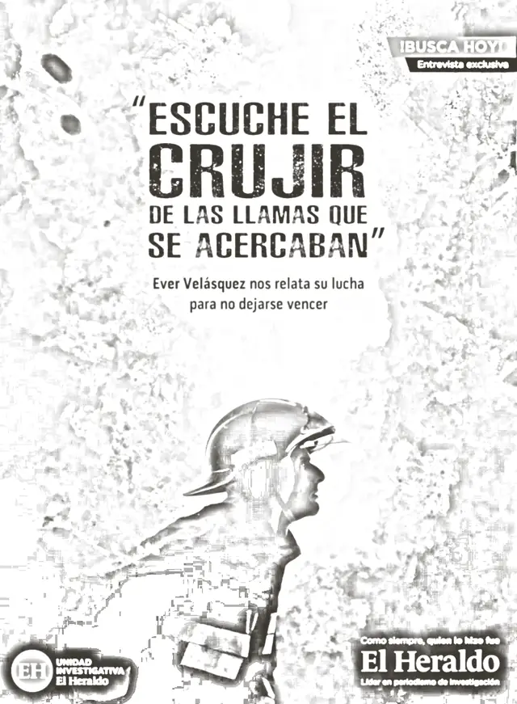

El Heraldo
La Montañita fire, special edition

- Tell it through one man
- His words, in quotes
- Launch flag: ¡Busca hoy!
01 The idea
Tell El Heraldo’s special edition through one firefighter, Ever Velásquez, a year after the fire.

02 The line
“Escuché el crujir de las llamas que se acercaban”
“I heard the crackle of the flames closing in.”
03 The picture
Two teasers set the date, then three key visuals sent readers to the exclusive interview.


Teasers: “Descubre la historia a partir del 25 de marzo”
Launch: “¡Busca hoy!”, exclusive interview